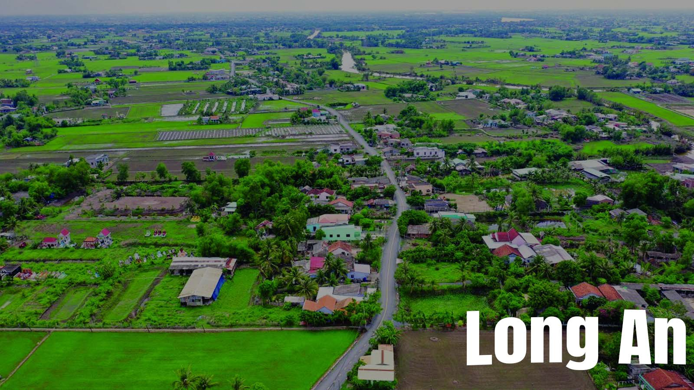

Tại sao cần thuê bảo vệ tại Long An? Những loại hình dịch vụ bảo vệ nào có tiềm năng phát triển? Cùng Quang Khải tìm hiểu ở các nội dụng sau đây.
Long An là tỉnh của miền Tây nối liền cửa ngõ TP. Hồ Chí Minh, nằm trong vùng kinh tế trọng điểm phía Nam, là cửa ngõ nối liền Đông Nam Bộ với khu vực Đồng bằng Sông Cửu Long, bằng hệ thống các đường Quốc lộ. Long An nổi tiếng với các hoạt động sản xuất, chế biến, xuất khẩu nông sản. Bên cạnh đó nền công nghiệp với các sản phẩm như dệt may, thực phẩm chế biến, xây dựng,…đang được phát triển mạnh mẽ. Tỉ lệ đô thị hóa tính đến năm 2020 đạt 18%. Long An là nơi đầy tiềm năng cho lĩnh vực dịch vụ hoạt động và phát triển đa dạng.

Các tiềm năng của Dịch vụ Bảo vệ tại Long An
1. Tiềm năng về Công nghiệp
Là khu vực có nhiều nông sản và tập trung các công ty chế biến sản xuất nông sản. Bên cạnh đó, hoạt động công nghiệp như dệt may, thực phẩm chế biến, xây dựng… cũng chú trọng phát triển. Với lợi thế về diện tích khu vực mà Long An có nhiều khu công nghiệp được xây dựng và phân bố rộng khắp tỉnh. Điều này cho thấy, số lượng các công ty, xí nghiệp rất nhiều. Những mục tiêu này có tài sản lớn, mọi sự cố xảy ra đều có nguy cơ nghiêm trọng và rất nghiêm trọng.
Do đó, tiềm năng dịch vụ bảo vệ Long An đầu tiên là Bảo vệ Nhà máy, xí nghiệp, khu công nghiệp.
2. Tiềm năng về giao thông
Hệ thống các đường giao thông đa dạng như đường bộ, đường thủy.
Long An là cửa ngõ nối liền Đông Nam Bộ với khu vực Đồng bằng Sông Cửu Long bằng hệ thống các đường Quốc lộ. Sự di chuyển ra vào, vận chuyển hàng hóa thường xuyên diễn ra với mật độ cao. Trước khối lượng sản phẩm có giá trị và nhiều, các phương tiện dễ dàng trở thành mục tiêu của các đối tượng có âm mưu cướp đoạt, phá hoại.
4. Phản hồi của khách hàng về dịch vụ của công ty dịch vụ bảo vệ uy tín
Kết quả đánh giá của những khách hàng trước luôn là cơ sở cho bất cứ ai cũng quan tâm khi lựa chọn dịch vụ bảo vệ. Khách hàng có thể tham khảo trên chính trang web của đơn vị, xem các bài đánh giá trên mạng, trao đổi trực tiếp với đơn vị đã hoặc đang sử dụng dịch vụ. Tuy nhiên, sẽ có nhiều phản hồi từ các công ty đối thủ gây nhiễu loạn thông tin vì thế, khách hàng cần kỹ lưỡng trong quá trình tham khảo này.
Bảo vệ mục tiêu di dộng, bảo vệ tải tiền và hàng hóa là tiềm năng lớn để phát triển.
Lợi dụng hệ thông kênh rạch, Long An cho xây dựng các bến cảng để dễ dàng thông thương. Điều này rất tuyệt vời vì đã tận dụng lợi thế thiên nhiên vào phát triển kinh tế. Tuy nhiên, các bến cảng ở xa khu dân cư và gần các kho tạm hay kho của công ty / khu công nghiệp gần đó. Đây là lợi thế cho đối tượng hoạt động bất chính sử dụng khu vực để tiến hành hoạt động phi pháp.
Bảo vệ Kho hàng, Bến cảng, Bến bãi trở thành dịch vụ bảo vệ cần thiết tại Long An.
3. Tiềm năng về xã hội
Dân số chủ yếu là nông dân, công nhân, lao động phổ thông với 28 dân tộc cùng sinh sống. Trình độ dân trí phân hóa theo nhiều cấp. Từ đó khó khăn trong quản lý và hướng dẫn hành động có họ. Nhiều sự việc chưa được giải quyết thỏa đáng đã gây ra xung đột, mất trật tự xã hội. Điều này gây hoang mang cho người dân trong khu vực trị an bất ổn.
Dịch vụ bảo vệ tại Khu dân cư, Nhà hàng, Khách sạn vô cùng quan trọng.
Tỷ lệ đô thị hóa đạt 18% năm 2020, điều này cho thấy, đời sống, mật độ ngày càng tăng. Các dịch vụ cộng đồng, xây dựng cũng tăng lên theo. Các hành vi trộm cắp ở công trường, các tòa nhà, chung cư cũng trở nên nhiều và tinh vi hơn.
Yêu cầu Dịch vụ bảo vệ tại Long An quan tâm đến bảo vệ Tòa nhà, Chung cư, bảo vệ công trình thi công.
Dân sinh tăng cao, nhu cầu đời sống phát triển, từ đó các dịch vụ y tế, sức khỏe, giáo dục, đào tạo là điều không thể thiếu. Sự phát triển của hệ thống trường học các cấp và bệnh viện phòng khám là điều tất yếu.
Điều này mở ra tiềm năng dịch vụ bảo vệ tại Long An về bảo vệ Trường học, bảo vệ Bệnh viên, phòng khám
CÔNG TY CỔ PHẦN DỊCH VỤ BẢO VỆ CHUYÊN NGHIỆP QUANG KHẢI – KÍNH CHÀO QUÝ KHÁCH.
Để xây dựng dịch vụ bảo vệ chất lượng cao. Quang Khải không ngừng đổi mới. Chúng tôi luôn tuân thủ pháp luật, duy trì các tiêu chuẩn đạo đức trong kinh doanh. Với đội ngũ chuyên gia an ninh giàu kinh nghiệm trong ngành bảo vệ được trang bị công cụ hỗ trợ chuyên dụng hiện đại. Cùng với giải pháp kiểm soát chất lượng dịch vụ qua hệ thống camera quan sát được lắp đặt miễn phí tại các mục tiêu bảo vệ. Quang Khải luôn đem đến cho khách hàng một chất lượng dịch vụ hoàn hảo, đảm bảo an toàn tài sản cho Quý khách hàng.
Quang Khải cung cấp dịch vụ rộng khắp các thành phố, thị xã, huyện trên Long An, Bảo vệ Bến Lức, Bảo vệ Đức Hòa, Bảo vệ Cần Đước, Bảo vệ Cần Giuộc, Bảo vệ Châu Thành, Bảo vệ Thủ Thừa, Bảo vệ Tân Trụ, Bảo vệ Tân An, Bảo vệ Kiến Tường, Bảo vệ Đức Huệ, Bảo vệ Mộc Hóa, Bảo vệ Tân Hưng, Bảo vệ Tân Thạnh, Bảo vệ Thạnh Hóa, Bảo vệ Thủ Thừa, Bảo vệ Vĩnh Hưng.
Liên hệ ngay với chúng tôi để được tư vấn và hợp tác. Hotline: 0904 043 114. Mail: baovequangkhai.info@gmail.com.